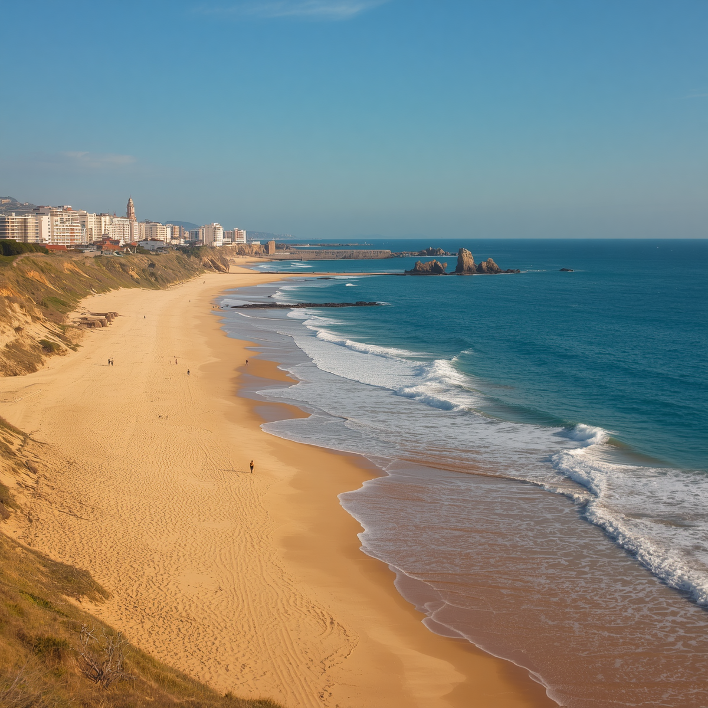

Playa de los Navegantes
La Playa de los Navegantes es una de las postales más reconocidas de Lunaria. Su arena dorada y sus vistas al océano recuerdan la relación que la ciudad mantiene con el mar desde sus comienzos, cuando la pesca era la principal actividad de sus habitantes. Es un lugar elegido para caminar junto a la costa, descansar y disfrutar del paisaje.
Zona costera norte.
Nadar, caminar y practicar surf.
Todos los días, de a
.